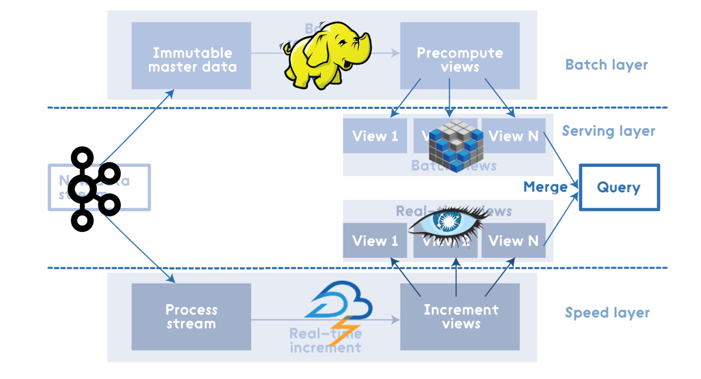
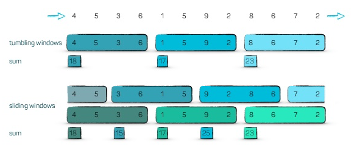
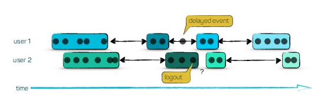
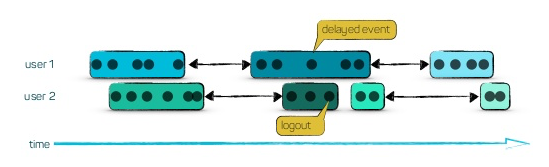

Streaming Frameworks
Do It Yourself
Hi, my name is Tom.
Developer
Ordina Belgium
@tomvdbulck
https://github.com/tomvdbulck
Agenda
- Streaming?
- Typical Problems?
- Streaming Operations?
- Storm
- Apache Spark
- Apache Flink
- Kafka Streams
- Spring Cloud Stream
- Recap
- What Next
Why Streaming?
Lambda Architecture
IoT
Clickstreams
Monitoring Data

Online Games

Financial Transactions
Streaming: Endless & Continuous Data
Continuous Flow
Speed & Realtime
Distributed & Scalable
Streaming: Typical Problems
Time
Order
Event Time vs Processing Time
Stream Operations
Stream Operations
Filter & Transform Group Aggregate Windows
Filter & Transform
Group
Aggregate
Windows
Tumbling Windows Sliding Windows Session Windows
Tumbling & Sliding Windows
Session Windows
Session Windows
Triggers
These will trigger the window
Time Triggers

Count Triggers

Content Triggers
Kafka Streams
Apache Storm
Spark
Micro-Batching
Apache Flink
Spring Cloud Stream
Recap
What Next?
What Next?

Questions ?
Thanks for watching!
Now kick some ass!